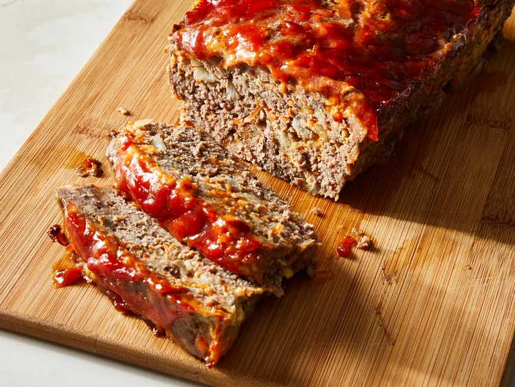

Best Ever Meatloaf

A succulent meatloaf that will make your
friends beg for your recipe
This best ever meatloaf recipe lives up to its name
and is my favorite I have found. Try it and you will see.
Prep Time 20 minutes
Cook Time 1 hrs
Total Time 1hrs 20mins
Servings 6
Ingredients
- 2 large eggs
- 2/3 cup milk
- 2 teaspoons salt
- 1/4 teaspoons ground black pepper
- 3 slices bread, crumbled
- 1 1/2 pounds ground beef
- 1 onion, chopped
- 1/2 cup shredded cheddar cheese
- 1/2 cup shredded carrot
- 1/4 cup brown sugar
- 1/4 cup ketchup
- 1 tablespoon prepared yellow mustard
Steps
- Preheat the oven to 350 degrees F (175 degrees C).
- Whisk eggs, milk, salt, and ground black pepper in a large bowl. Add crumbled bread and stir until dissolved. Mix ground beef, onion, Cheddar cheese, and carrot into bread mixture; transfer mixture to a 9x5-inch loaf pan. Combine brown sugar, ketchup, and mustard in a small bowl; spread over the meat mixture.
- Bake in the preheated oven until no longer pink in the center, 60 to 75 minutes. An instant-read thermometer inserted into the center should read at least 160 degrees F (70 degrees C).